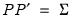

To create a new system manually or by inserting a text file, click on or type
system in the command window. A blank system object window should appear. You will fill the system specification window with text describing the equations, and potentially, lines describing the instruments and the parameter starting values. You may enter the text by typing in the specification, or clicking on the button and loading a specification from a text file. You may also insert a text file using the right-mouse button menu and selecting
To estimate the parameters of your system of equations, you should first create a system object and specify the system of equations. Click on or type
system in the command window. The system object window should appear. When you first create the system, the window will be blank. You will fill the system specification window with text describing the equations, and potentially, lines describing the instruments and the parameter starting values.
From a list of selected variables, EViews can also automatically generate linear equations in a system. To use this procedure, first highlight the dependent variables that will be in the system. Next, double click on any of the highlighted series, and select , or right click and select . The
Make System dialog box should appear with the variable names entered in the
Dependent variables field. You can augment the specification by adding regressors or AR terms, either estimated with common or equation specific coefficients. See
“System Procs” for additional details on this dialog.
The proc is also available from a Group object (see
“Make System”).
To designate instruments for a stacked projection, you should use the @stackinst statement (note: this statement is only available for systems estimated by 2SLS or 3SLS; it is not available for systems estimated using GMM).
In a @stackinst statement, the “@STACKINST” keyword should be followed by a list of stacked instrument specifications. Each specification is a comma delimited list of series enclosed in parentheses (one per equation), describing the instruments to be constrained in a stacked specification.
For example, the following @stackinst specification creates two instruments in a three equation model:
For systems that contain nonlinear equations, you can include a line that begins with param to provide starting values for some or all of the parameters. List pairs of parameters and values. For example:
The drop-down menu marked Estimation provides you with several options for the estimation method. You may choose from one of a number of methods for estimating the parameters of your specification.
The estimation dialog may change to reflect your choice, providing you with additional options. If you select an estimator which uses instrumental variables, a checkbox will appear, prompting you to choose whether to . As the checkbox label suggests, if selected, EViews will add lagged values of the dependent and independent variable to the instrument list when estimating AR models. The lag order for these instruments will match the AR order of the specification. This automatic lag inclusion reflects the fact that EViews transforms the linear specification to a nonlinear specification when estimating AR models, and that the lagged values are ideal instruments for the transformed specification. If you wish to maintain precise control over the instruments added to your model, you should unselect this option.
Additional options appear if you are estimating a GMM specification. Note that the GMM-Cross section option uses a weighting matrix that is robust to heteroskedasticity and contemporaneous correlation of unknown form, while the
GMM-Time series (HAC) option extends this robustness to autocorrelation of unknown form.
If you select either GMM method, EViews will display a checkbox labeled . If selected, EViews will estimate the model using identity weights, and will use the estimated coefficients and GMM specification you provide to compute a coefficient covariance matrix that is robust to cross-section heteroskedasticity (White) or heteroskedasticity and autocorrelation (Newey-West). If this option is not selected, EViews will use the GMM weights both in estimation, and in computing the coefficient covariances.
When you select the GMM-Time series (HAC) option, the dialog displays additional options for specifying the weighting matrix. The new options will appear on the right side of the dialog. These options control the computation of the heteroskedasticity and autocorrelation robust (HAC) weighting matrix. See
“Technical Discussion” for a more detailed discussion of these options.
The Kernel Options determines the functional form of the kernel used to weight the autocovariances to compute the weighting matrix. The
Bandwidth Selection option determines how the weights given by the kernel change with the lags of the autocovariances in the computation of the weighting matrix. If you select
Fixed bandwidth, you may enter a number for the bandwidth or type
nw to use Newey and West’s fixed bandwidth selection criterion.
The Prewhitening option runs a preliminary VAR(1) prior to estimation to “soak up” the correlation in the moment conditions.
If the ARCH - Conditional Heteroskedasticity method is selected, the dialog displays the options appropriate for ARCH models.
Model type allows you to select among three different multivariate ARCH models:
Diagonal VECH,
Constant Conditional Correlation (CCC), and
Diagonal BEKK.
Auto-regressive order indicates the number of autoregressive terms included in the model. You may use the
Variance Regressors edit field to specify any regressors in the variance equation.
The coefficient specifications for the auto-regressive terms and regressors in the variance equation may be fine-tuned using the controls in the ARCH coefficient restrictions section of the dialog page. Each auto-regression or regressor term is displayed in the
Coefficient list. You should select a term to modify it, and in the
Restriction field select a type coefficient specification for that term. For the Diagonal VECH model, each of the coefficient matrices may be restricted to be
Scalar,
Diagonal,
Rank One,
Full Rank,
Indefinite Matrix or (in the case of the constant coefficient)
Variance Target. The options for the BEKK model behave the same except that the ARCH, GARCH, and TARCH term is restricted to be . For the CCC model, is the only option for ARCH, TARCH and GARCH terms, and are allowed or the constant term. For for exogenous variables you may choose between
Individual and
Common, indicating whether the parameters are restricted to be the same for all variance equations (common) or are unrestricted.
By default, the conditional distribution of the error terms is assumed to be Multivariate Normal. You have the option of instead using by selecting it in the
Error distribution dropdown list.
The drop down allows you to choose between the default , and , , and settings.
Note that all four of the estimation techniques yield results that are asymptotically efficient. For linear models, the two Iterate Weights and Coefs options are equivalent, and the two
One-Step Weighting Matrix options are equivalent, since obtaining coefficient estimates does not require iteration.
In addition, the Options tab allows you to set a number of options for estimation, including convergence criterion, maximum number of iterations, and derivative calculation settings. See
“Setting Estimation Options” for related discussion.
The system estimation output contains parameter estimates, standard errors, and t-statistics (or
z-statistics for maximum likelihood estimations), for each of the coefficients in the system. Additionally, EViews reports the determinant of the residual covariance matrix, and, for ARCH and FIML estimates, the maximized likelihood values, Akaike and Schwarz criteria. For ARCH estimations, the mean equation coefficients are separated from the variance coefficient section.


must be specified; no elements will be estimated.
, you will provide the name of a matrix
where . Again, no elements of the residual covariance matrix are estimated.
is set to 0.7. However, you have the option to choose from a number of weights from 0.1 to 1, in increments of 0.1. Notice that if the parameter is set to 1 the initial value is simply the unconditional variance, i.e. backcasting is not performed.
 statistic, Durbin-Watson statistic, standard error of the regression, sum-of-squared residuals, etc., are computed for each equation using the standard definitions, based on the residuals from the system estimation procedure.
statistic, Durbin-Watson statistic, standard error of the regression, sum-of-squared residuals, etc., are computed for each equation using the standard definitions, based on the residuals from the system estimation procedure.